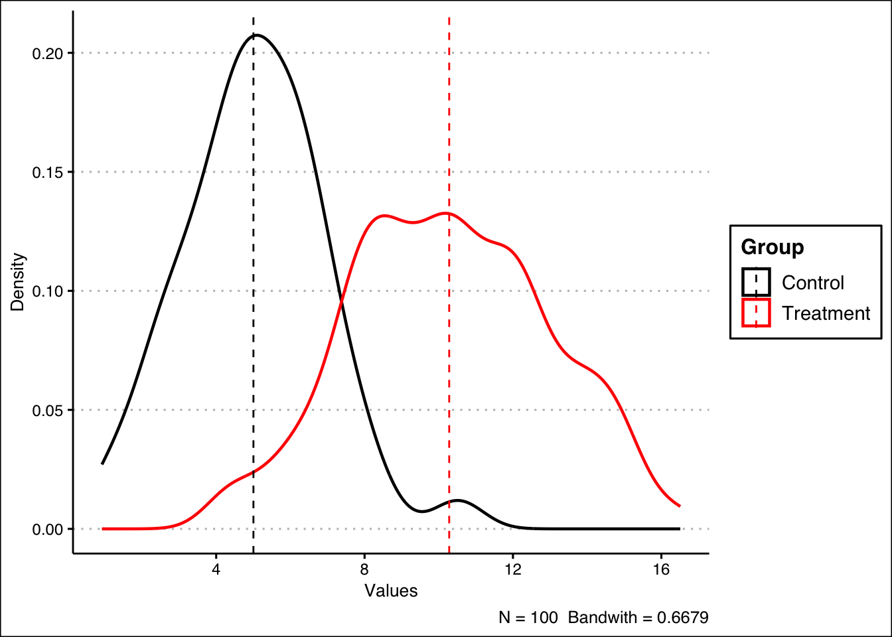
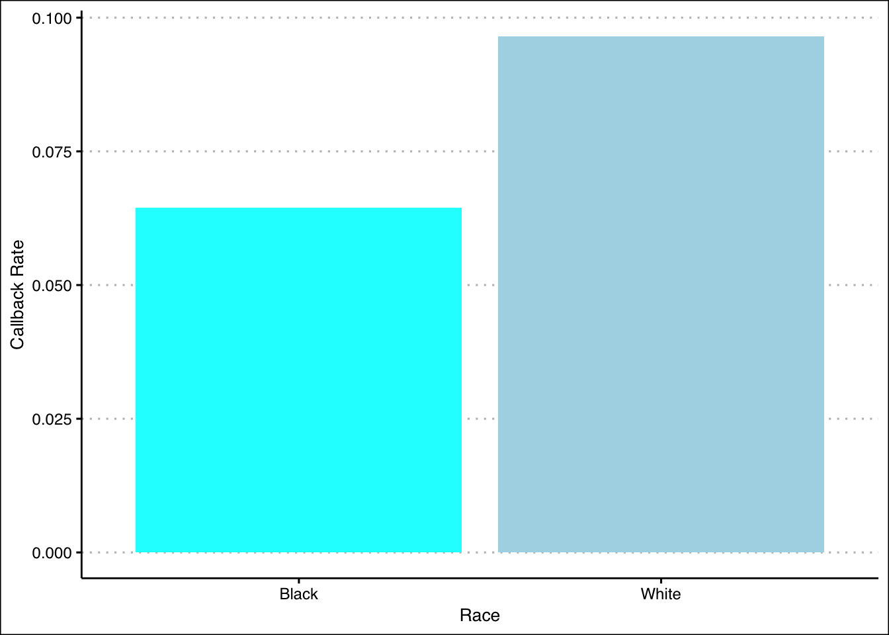

4 Randomized Controlled Trials
4.1 Methodology
In this chapter, we will go over the basic intuition that is required for carrying out Randomized Control Trials (RCT) and the fundamental problem of causal inference. We will also discuss several potential solutions and caveats.
4.2 Neyman-Rubin Model
How do we determine the causal effect of some treatment? Intuitively, we can just compare the outcome between two groups: treatment (treated) and control (untreated). Neyman-Rubin defined the causal effect \(\delta\) as follows:
\[\begin{equation} \delta=Y^{Treatment}-Y^{Control} \tag{4.1} \end{equation}\]
However, now we encounter a major issue. How do we know if this comparison is fair? How do we know that we are comparing apples with apples and not apples with oranges?
4.3 Selection Bias
Imagine that you are comparing the effect of health insurance on peoples health. You gather a pool of people and separate them in two groups. People with health insurance are classified as the treatment, and people with no health insurance are placed into the control group.
Suppose that you create a sophisticated regression model and you find that people with health insurance tend to have better health compared to the people without health insurance. Does this mean that health insurance causes healthier lifestyle?
We can actually argue that people who have access to health insurance may have higher levels of income. Thus, this group of people may have access to better food, better living conditions, access to a gym, and so on which may all lead to better health. Therefore, this comparison is not fair, we cannot simply subtract the difference in outcomes, because we are comparing ‘apples with oranges’.
This phenomenon is something that we refer to as selection bias. We define it as the bias driven by the systematic differences between the treatment (e.g insured) and control (e.g uninsured) groups.
The solution to this is ceteris paribus or ‘all other things equal’, the favorite Latin assumption for economists. However, in the field social studies, this is fundamentally difficult to attain as all individuals are inherently different.
Potential remedies to this selection effect include:
- Adding: Add more control variables to mitigate the omitted variable bias, a very popular and cheap, but it is not really a solution.
- Matching: Choose a comparison group that is close to the group of interest, but we will still encounter problems with unobserved variables.
- Modeling: Explicitly model the selection process (e.g Heckman selection), with the risk of modeling human behavior wrongly.
- Experiments: Randomized Controlled Trials (RCT).
4.4 Counterfactual Framework
So how do we deal with apples and oranges? The best comparison (control) group for an interest (treatment) group is a group that only differs in treatment but not any other features. So instead we ask the question:
What would be the potential outcome if the treatment did not happen?
We will start exploring this question by understanding some crucial concepts. Note that we want to focus more on average treatment effect instead of individual treatment effect because we are studying general human behavior and statistically, we need to calculate the average of a sufficient large group of people to remove the effect driven by chance or noise.
4.4.1 Defining ATE
The Average Treatment Effect (ATE) is defined as follows:
\[\begin{equation} \begin{split} \mathrm{ATE} & =\text{mean}(Y^{\text{Treated}})-\text{mean}(Y^{\text{Control}})\\ & =\text{mean}(Y^{\text{Treated}}-Y^{\text{Control}}) \end{split} \tag{4.2} \end{equation}\]Visualizing ATE with R
Let’s try to illustrate and visualize ATE with R. First, we generate hypothetical control and treatment groups as follows:
# We randomly generate 100 data points for both groups
# The control follows a normal distribution with mean = 5 and std = 2
y_control <- rnorm(100, mean = 5, sd = 2)
# The treatment follows a normal distribution with mean = 10 and std = 3
y_treatment <- rnorm(100, mean = 10, sd = 3)We find ATE by calculating the difference in their means:
## [1] 5.32968We can visualize the ATE by plotting the density curves for the control and treatment groups and mark out the means with dashed lines.
##
## Attaching package: 'ggplot2'## The following object is masked from 'auto':
##
## mpglibrary(ggthemes)
library(plyr)
# We combine the data into one larger data frame and create categories
ate_df <- data.frame(Control = y_control, Treatment = y_treatment)
# Now, we stack the two columns into one
ate_df <- stack(lapply(ate_df[1:2], as.numeric))
names(ate_df) <- c("Values", "Group")After the data transformation above, our data will look something like this.
| Values | Group | |
|---|---|---|
| 98 | 2.2273200 | Control |
| 99 | 7.7983737 | Control |
| 100 | 0.6032325 | Control |
| 101 | 12.3189941 | Treatment |
| 102 | 8.2996330 | Treatment |
| 103 | 9.9676638 | Treatment |
We can continue plotting the data. In this plot, ATE is just the distance between the two dashed lines.
# Now we create a summary table for the means
mu <- ddply(ate_df, "Group", summarise, grp.mean = mean(Values))
ate_df |> ggplot(aes(x = Values, color = Group)) +
# Plot the density curves
geom_density(linewidth = 0.8, alpha = 0.8, bw = 0.6679) +
# Add the dashed lines marking the averages
geom_vline(data = mu, aes(xintercept = grp.mean, color = Group),
linetype = "dashed") +
# Add some additional details
theme_clean() +
ylab("Density") +
labs(caption = "N = 100 Bandwith = 0.6679") +
scale_color_manual(values=c("black", "red"))
4.4.2 Defining ATT
The Average Treatment Effect on the Treated (ATT) is defined as follows:
\[\begin{equation} \begin{split} \mathrm{ATT} & =\text{mean}(Y^{\text{Treated|Treated}})-\text{mean}(Y^{\text{Control|Treated}})\\ & =\text{mean}(Y^{\text{Treated}}-Y^{\text{Control}}|\text{Treated}) \end{split} \tag{4.3} \end{equation}\]4.4.3 Comparing ATE and ATT
ATE describes the treatment effect for the entire population, including individuals who would never end up getting the treatment in the real world. For the interest of testing theory or understanding general behavior, we care more about ATE.
On the other hand, ATT describes the treatment effect on only the individuals who end up getting the treatment. For the interest of policy implementation, we care more about ATT.
In well designed studies, ATE can be the same as ATT.
4.4.4 Counterfactual Model
Now we can formally define the counterfactual model. We will then also illustrate the usage of the model with a hypothetical data set in R.
Defining Treatment Assignment \[D_i=D_1\text{ if unit i received the treatment}\] \[D_i=D_0\text{ if unit i did not receive treatment}\] Defining Outcomes \[Y_i:\text{Observed outcome variable of interest for unit i}\] \[\text{Note that the treatment occurs temporally before the outcomes}\] Fundamental Problem of Causal Inference
Recall that we are trying to answer this question. However, this leads us to a crucial obstacle.
We can never observe the treated outcome and the control outcome for the same individual.
Revisiting Delta and Average Treatment Effect
In light of the aforementioned fundamental issue, we redefine the casual effect of the treatment (4.1) as the difference of its two potential outcomes.
\[\delta \text{ is }\alpha_i=Y_{1i}-Y_{0i}\] \[Y_{di}=Y_{1i}=\text{Potential outcome for unit i with treatment}\] \[Y_{di}=Y_{0i}=\text{Potential outcome for unit i without treatment}\]
Based on the above, we will also redefine Average Treatment Effect (4.2) as follows:
\[\alpha_{\text{ATE}}=\frac{\Sigma Y_{1i}}{N}-\frac{\Sigma Y_{0i}}{N}=E[Y_{1i}-Y_{0i}]\]
Correspondingly, we redefine the Average Treatment Effect on the Treated (4.3) and also introduce the Average Treatment Effect on the Control (ATC) as follows:
\[\alpha_{\text{ATT}}=E[Y_{1i}-Y_{0i}|D_1]\] \[\alpha_{\text{ATC}}=E[Y_{1i}-Y_{0i}|D_0]\] Illustrating Counterfactuals with R
We will now use the unions.csv data set to illustrate the concept of counterfactuals and the Fundamental Problem of Causal Inference. Let’s view the structure of the available data. The variables in the data set are:
surname: Individual’s Last Nameunion_member: Union Member Logical Variable (1=“Yes”; 0=“No”)ideology_y1: Ideology If a Union Member (Ranges from -10=“far-left” to 10=“far-right”)ideology_y0: Ideology If Not a Union Member (Ranges from -10=“far-left” to 10=“far-right”)ITE: Individual Treatment Effect (incomplete)
| surname | union_member | ideology_y1 | ideology_y0 | ITE |
|---|---|---|---|---|
| Abernathy | 0 | 4 | 7 | NA |
| Baca | 1 | -2 | -2 | NA |
| Chang | 0 | 3 | 2 | NA |
| Dunn | 1 | -4 | 1 | NA |
| Emami | 1 | -2 | 1 | NA |
| Fan | 0 | 0 | 0 | NA |
We can see that the rightmost column is still empty. The column is designated for the Individual Treatment Effect (ITE). In other words, it is actually \(\delta\) or \(\alpha_{i}\). Let’s calculate the treatment effect as follows, and assign the result to the column:
| surname | union_member | ideology_y1 | ideology_y0 | ITE |
|---|---|---|---|---|
| Abernathy | 0 | 4 | 7 | -3 |
| Baca | 1 | -2 | -2 | 0 |
| Chang | 0 | 3 | 2 | 1 |
| Dunn | 1 | -4 | 1 | -5 |
| Emami | 1 | -2 | 1 | -3 |
| Fan | 0 | 0 | 0 | 0 |
Thus, we have updated our data set and we can now simply calculate the ATE as the mean of ITE:
## [1] -1Additionally, we can check the ‘most affected’ individual by creating a vector containing the absolute values of the ITE, and then we look for the index containing the maximum value:
# Create the vector
ITE_abs <- abs(unions$ITE)
# Find the corresponding surname of the maximum absolute ITE
unions$surname[which.max(ITE_abs)]## [1] "Dunn "To calculate ATT, we can filter out the control group and then use the mean() function as follows:
## [1] -2Do you see the main issue? In real life, the table is incomplete! We are not able to directly calculate ITE, as an individual cannot be a union member and not a union member at the same time. In other words, in practice, our data would look something like this:
| surname | union_member | ideology_y1 | ideology_y0 | ITE |
|---|---|---|---|---|
| Abernathy | 0 | NA | 7 | NA |
| Baca | 1 | -2 | NA | NA |
| Chang | 0 | NA | 2 | NA |
| Dunn | 1 | -4 | NA | NA |
| Emami | 1 | -2 | NA | NA |
| Fan | 0 | NA | 0 | NA |
Therefore, observed outcomes are realized as
\[\begin{equation} Y_i=D_i \times Y_{1i}+(1-D_i)\times Y_{0i} \tag{4.4} \end{equation}\]
Additionally, our ‘best guess’ is the Difference-in-Means (DM) estimator, which is based on the outcomes that we actually see in the above table, defined as \[E[Y_i|D_i=1]-E[Y_i|D_i=0]\] We calculate this estimator in R with the following:
is_union <- (unions$union_member == 1)
not_union <- (unions$union_member == 0)
mean(unions$ideology_y1[is_union]) - mean(unions$ideology_y0[not_union])## [1] -1.636364As you can see, it is not equal to the ATE we calculated previously. How do we show this mathematically? Well we can use a simple mathematical trick. We start off with the Difference-in-Means estimator as follows: \[E[Y_i|D_i=1]-E[Y_i|D_i=0]\] Under the observed outcome framework (4.4) the above equation is equivalent to: \[E[Y_{1i}|D_i=1]-E[Y_{0i}|D_i=0]\]
We then add and subtract \(E[Y_{0i}|D_i=1]\) to the above term. \[E[Y_{1i}|D_i=1]-E[Y_{0i}|D_i=1]+E[Y_{0i}|D_i=1]-E[Y_{0i}|D_i=0]\]
This effectively does not change the equation. The term is an unobservable, as it is the potential outcome if unit \(i\) did not receive treatment, given that unit \(i\) is in the treatment group. Combining the first two terms, we have: \[E[Y_{1i}-Y_{0i}|D_i=1]+E[Y_{0i}|D_i=1]-E[Y_{0i}|D_i=0]\] What do these terms mean exactly?
\[E[Y_{1i}-Y_{0i}|D_i=1] \text{ is the ATT}\] \[E[Y_{0i}|D_i=1]-E[Y_{0i}|D_i=0] \text{ is the (selection) bias}\] Therefore, in causal inference, our aim is to analyze ATT, whilst minimizing the bias term.
4.5 Framework and Assumptions
Framework
In RCT, we rely on an appropriate assignment mechanism to fill in the missing potential outcomes and get rid of the bias. In other words, the randomization stage deals with the ‘apples and oranges’ problem between the treatment and control.
Assumptions Now we introduce the two necessary assumptions for Randomized Controlled Trials. Excludability
The treatment is the sole causal agent and there are no confounding factors (factors that are associated with the treatment but not the intention of the treatment).
- Example of violation: Hawthorne effect (people behave differently when they are aware of being in an experiment).
Non-interference/no spillovers
The individual potential outcomes of each unit do not depend on the treatment status of any units other than themselves.
- Example of violation: The treated individuals transfer resources to the control individuals.
4.6 Caveats and Difficulties
Random Assignment is Not Random Sampling
These two processes are completely separate, and happen in different parts of the experiment.
Internal and External Validity
We should always ask ourselves if the effect of interest can be translated to the general population
Difficulties in Design
- We need a simple design that works
- We need to know the subjects well to design an effective experiment
- Experimental design is more of an art than a science
Difficulties in Implementation
- Non-compliance: Individuals do not do what you ask them to do
- Attrition: People quit during the experiment
- Spill-overs: Individuals in the control group interact with treated individuals or are indirectly affected by them through the changed social and economic conditions caused by the treatment
- Ethics: Ethical issues can be a serious concern
4.7 Case Studies
4.7.1 Labor Market Experiment
This example is based on a well-known paper on racial bias in the labor market: “Are Emily and Greg More Employable Than Lakisha and Jamal? A Field Experiment on Labor Market Discrimination” by Marianne Bertrand and Sendhil Mullainathan (thus BM for short). The paper used a Randomized Controlled Trial experiment.
The paper wanted to see if there was racial discrimination, particularly when comparing White and Black job seekers, in the Chicago and Boston labor market. The researchers created fake CVs with White and Black sounding names, and then diversified the CV quality and postal codes.
They found that people who had Black sounding names had a lower callback rate. Moreover, it seemed that the quality of the resumes did not matter, as the better quality White resumes had 30% more callbacks than the worse quality ones, but the effect was not as great for African-American resumes. Additionally, better neighborhoods based on the assigned postal codes increased callback rates for White resumes but not for Black ones.
The paper concludes that African-Americans face differential treatment when searching for jobs, and they find it hard to overcome this hurdle by improving their observable skills and credentials. In fact if African-Americans knew the economic returns for their skills, they rationally would be less willing to participate in skills enhancement programs.
Depending on the available data, we can use different causal inference strategies or methodologies to our advantage. Here, let’s try and mimic the data exploration process that eventually lead to them using an RCT approach.
Let’s view the structure of our data. We have the following variables:
firstname: Individual’s First Namesex: Individual’s Biological Sexrace: Individual’s Racecall: Callback Logical Variable (1=“Yes; 0=”No”)
# Generate the frequency table
knitr::kable(head(resume), align = "c", booktabs = TRUE, caption = "The Structure of `resume.csv`")| firstname | sex | race | call |
|---|---|---|---|
| Allison | female | white | 0 |
| Kristen | female | white | 0 |
| Lakisha | female | black | 0 |
| Latonya | female | black | 0 |
| Carrie | female | white | 0 |
| Jay | male | white | 0 |
First, we can tabulate the relationship between race and callback by creating a frequency table:
# This stage just to format things better, so that the table is more readable
resume_copy <- resume
resume_copy$race[resume_copy$race == "white"] <- "White"
resume_copy$race[resume_copy$race == "black"] <- "Black"
resume_copy$call[resume_copy$call == "1"] <- "Received Callback"
resume_copy$call[resume_copy$call == "0"] <- "Received No Callback"
# Then we show the table
knitr::kable(table(resume_copy$race, resume_copy$call), align = "c", booktabs = TRUE)| Received Callback | Received No Callback | |
|---|---|---|
| Black | 157 | 2278 |
| White | 235 | 2200 |
Another way show a better picture of the relationship is to calculate the callback rates of the races:
# Callback rate for 'White'
call_rate_w <- mean(resume$call[resume$race == "white"])
# Callback rate for 'Black'
call_rate_b <- mean(resume$call[resume$race == "black"])Then, we can visualize the data and compare the two callback rates as with bar plots.
# library(ggplot2)
# library(ggthemes)
summary_bw <- data.frame(Callback_Rate = c(call_rate_b, call_rate_w),
Race = c("Black", "White"))
# Here we create the bar plot
ggplot(summary_bw, aes(x = Race, y = Callback_Rate, fill = Race)) +
geom_bar(stat = 'identity', show.legend = FALSE) +
xlab("Race") +
ylab("Callback Rate") +
scale_fill_manual(values = c("cyan", "lightblue")) +
theme_clean()
We can also create new conditional columns, or dummy variables based on the race and sex variables.
resume$BlackFemale <- ifelse(resume$race == "Black" & resume$sex == "female", 1, 0)
resume$BlackMale <- ifelse(resume$race == "Black" & resume$sex == "male", 1, 0)
resume$WhiteFemale <- ifelse(resume$race == "White" & resume$sex == "female", 1, 0)
resume$WhiteMale <-ifelse(resume$race == "White" & resume$sex == "male", 1, 0)# See the updated data set
knitr::kable(head(resume), booktabs = TRUE, align = "c",
caption = "Adding New Dummy Variables to `resume.csv`")| firstname | sex | race | call | BlackFemale | BlackMale | WhiteFemale | WhiteMale |
|---|---|---|---|---|---|---|---|
| Allison | female | white | 0 | 0 | 0 | 0 | 0 |
| Kristen | female | white | 0 | 0 | 0 | 0 | 0 |
| Lakisha | female | black | 0 | 0 | 0 | 0 | 0 |
| Latonya | female | black | 0 | 0 | 0 | 0 | 0 |
| Carrie | female | white | 0 | 0 | 0 | 0 | 0 |
| Jay | male | white | 0 | 0 | 0 | 0 | 0 |
4.7.2 Corruption in Indonesia
For the next example, we will use data from Benjamin A. Olken. 2007. “Monitoring Corruption: Evidence from a Field Experiment in Indonesia.” Journal of Political Economy, 115: 300-249.
The objective of this experiment is to evaluate two interventions aimed at reducing corruption in road building projects in Indonesian villages. One treatment is audits by engineers; the other is encouraging community participation in monitoring. This problem focuses on the latter intervention, which consists of inviting villagers to public meetings where project officials account for budget expenditures. In this paper, they used stratified randomization as the assignment procedure.
Here are the variables that are included in the data set:
The variables in the data set are:
pct_missing: Percent Expenditures Missingtreat_invite: Treatment Assignment (1=“Yes; 0=”No”)head_edu: Village Head Educationmosques: Mosques per 1,000pct_poor: Percent of Households Below the Poverty Linetotal_budget: Total Budget (Rp. Million) (Determined Prior to Intervention)
The main dependent variable is pct_missing: a measure of the difference between what the villages claim they spend on road construction and an independent estimate of what the villages actually spend.
Here, we will actually run the regression and conduct a t-test, but we will conduct the data exploration process as we did in the previous case study. Let’s compare the number of treated and untreated:
suppressMessages(library(stargazer))
# Generate the frequency table
knitr::kable(table(data.frame("Treatment" = olken$treat_invite)), align = "c", booktabs = TRUE)| Treatment | Freq |
|---|---|
| 0 | 191 |
| 1 | 376 |
Despite the large difference in frequencies, this is does not harm our experiment. We can still conduct a t-test later on to check the statistical significance our findings.
As the data set has already undergone assignment process, with details discussed in the paper, we can now compute the Difference-in-Means (DM) to estimate ATE as follows:
# Define the logical conditions
is_treatment <- (olken$treat_invite == 1)
is_control <- (olken$treat_invite == 0)
# Calculate DM
mean(olken$pct_missing[is_treatment], na.rm = TRUE) - mean(olken$pct_missing[is_control], na.rm = TRUE)## [1] -0.02314737Alternatively, we can also estimate the ATE with linear regression as follows:
# Linear Regression
olken_ate_estimate <- lm(pct_missing ~ treat_invite, data = olken)
# Display the coefficients in a stargazer table
# Display 8 digits to match the DM estimate
stargazer(coef(summary(olken_ate_estimate)), type = "html", flip = TRUE, digits = 8)| (Intercept) | treat_invite | |
| Estimate | 0.25210560 | -0.02314737 |
| Std. Error | 0.02699349 | 0.03321720 |
| t value | 9.33949600 | -0.69684900 |
| Pr(> | t| ) | 0 | 0.48623820 |
We can see that the estimate is indeed the same with the Difference-in-Means (DM) estimator we previously calculated, that is -0.02314737. Additionally, we can try and rerun the regression with added covariables.
# Multiple Linear Regression
olken_covariables <- lm(pct_missing ~ ., olken)
# Display the coefficients in a stargazer table
stargazer(coef(summary(olken_covariables)), type = "html", flip = TRUE)| (Intercept) | treat_invite | head_edu | mosques | pct_poor | total_budget | |
| Estimate | 0.390 | -0.026 | -0.006 | -0.048 | -0.118 | 0.001 |
| Std. Error | 0.087 | 0.033 | 0.006 | 0.019 | 0.075 | 0.0003 |
| t value | 4.491 | -0.797 | -0.949 | -2.540 | -1.574 | 1.846 |
| Pr(> | t| ) | 0.00001 | 0.426 | 0.343 | 0.011 | 0.116 | 0.066 |
We can see that the estimate did indeed change by approximately 0.003, as it is now -0.026.
As we add covariables, we must check the covariate balance in this data set. For example, here we check whether the education of the head of the household is roughly the same between the treatment and control groups with a t-test.
# Conduct a t-test for head of household education
t_head_edu <- t.test(olken$head_edu[is_treatment], olken$head_edu[is_control])| Estimate | t value | Pr(>|t|) | CI Lower | CI Upper |
|---|---|---|---|---|
| -0.0686555 | -0.2849279 | 0.7758529 | -0.5424163 | 0.4051052 |
In this illustration, we will use a t-test, but we show that you can run a linear regression model with the covariable as the dependent variable (e.g head_edu), and the treatment assignment as the independent variable. The results will be the same.
| Estimate | Std. Error | t value | Pr(>|t|) | |
|---|---|---|---|---|
| (Intercept) | 11.5026178 | 0.1958546 | 58.7303973 | 0.0000000 |
| treat_invite | -0.0686555 | 0.2410543 | -0.2848135 | 0.7758923 |
We may see minor differences of the 95% CI with the t-test caused by the definition of the functions in R. These are not to be considered, and the values are still practically identical.
| CI Lower | CI Upper | |
|---|---|---|
| (Intercept) | 11.1179184 | 11.8873172 |
| treat_invite | -0.5421367 | 0.4048256 |
Next, we will repeat the same process as above for the other covariables:
# Conducts a t-test for mosques
t_mosques <- t.test(olken$mosques[is_treatment], olken$mosques[is_control])
# Conducts a t-test for pct_poor
t_pct_poor <- t.test(olken$pct_poor[is_treatment], olken$pct_poor[is_control])
# Conducts a t-test for total_budget
t_total_budget <- t.test(olken$total_budget[is_treatment], olken$total_budget[is_control])We can tabulate all the results as follows:
# The following code creates the table
results <- matrix(nrow = 4, ncol = 4, NA)
rownames(results) <- c("Control", # Control Group Mean
"Treatment", # Treatment Group Mean
"Difference", # Difference in Means Between Treatment and Control
"P-value") # Associated P-value
colnames(results) <- c("head_edu", "mosques", "pct_poor", "total_budget")
# Let's enter our data
results[, 1] <- c(t_head_edu$estimate[1], t_head_edu$estimate[2],
t_head_edu$estimate[2] - t_head_edu$estimate[1],
t_head_edu$p.value)
results[, 2] <- c(t_mosques$estimate[1], t_mosques$estimate[2],
t_mosques$estimate[2] - t_mosques$estimate[1],
t_mosques$p.value)
results[, 3] <- c(t_pct_poor$estimate[1], t_pct_poor$estimate[2],
t_pct_poor$estimate[2] - t_pct_poor$estimate[1],
t_pct_poor$p.value)
results[, 4] <- c(t_total_budget$estimate[1], t_total_budget$estimate[2],
t_total_budget$estimate[2] - t_total_budget$estimate[1],
t_total_budget$p.value)
# Print out the table
stargazer(results, type = "html")| head_edu | mosques | pct_poor | total_budget | |
| Control | 11.434 | 1.412 | 0.414 | 80.223 |
| Treatment | 11.503 | 1.474 | 0.405 | 81.983 |
| Difference | 0.069 | 0.062 | -0.009 | 1.760 |
| P-value | 0.776 | 0.405 | 0.640 | 0.674 |
Looking at the t-tests, all the p-values are greater than 0.1. We fail to reject the null hypothesis that the true difference in means is equal to zero and thus it seems that the two groups are balanced.
We show that we are comparing apples with apples.